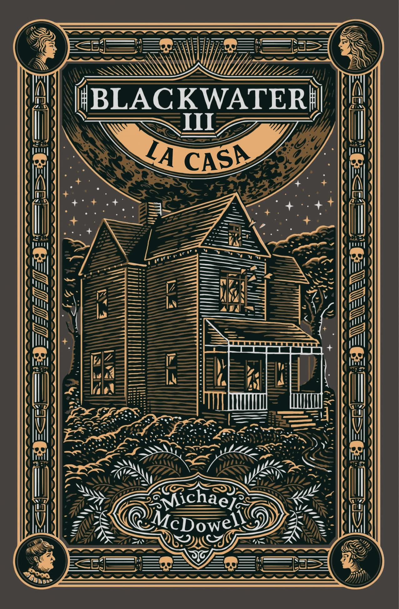
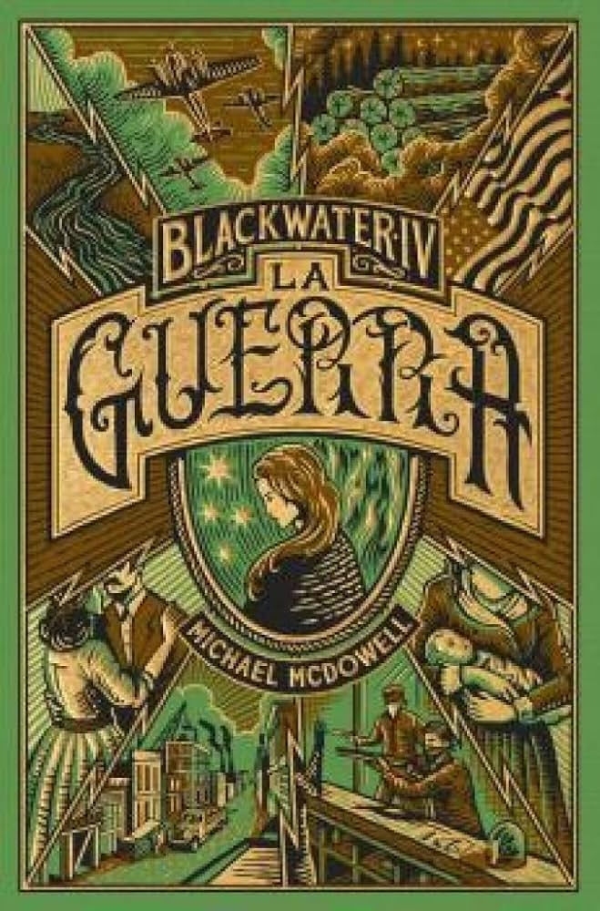
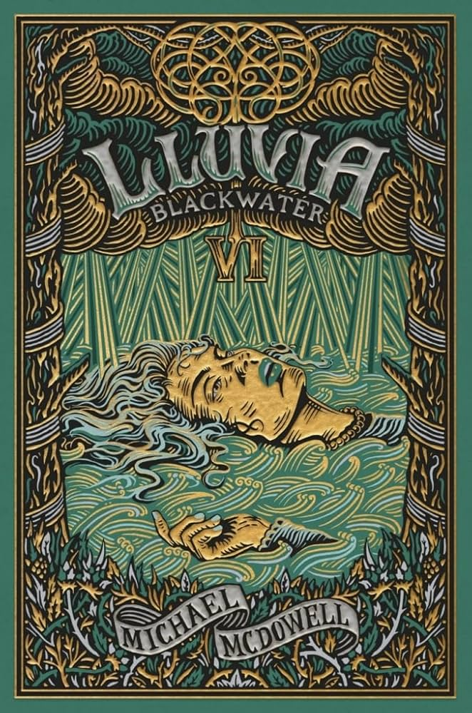

FINALIZADOS
| Título | Autor | Año publicación | Portada | Resumen |
|---|---|---|---|---|
| Blackwater I. La riada. | Michael McDowell | 1983 | En el pueblo de Perdido, tras una inundación por una riada, Oscar encuentra y rescata de un hotel a la misteriosa Ellinor, parece que tiene poderes acuáticos y se transforma en una especie de criatura asesina sin que nadie lo sepa. Elinor se casa con Oscar y tienen una hija (Miriam). Geneviene muere misteriosamente tras pegarle a su hija Grace. Ellinor y Mary-Love tienen cierta rivalidad cuando Oscar y ella se mudan a la casa de al lado a cambio de que Mary Love (madre de Oscar) se quede con su bebé. | |
| Blackwater II. El dique. | Michael McDowell | 1983 | Ellinor y Oscar tienen una segunda hija, Frances. El ingeniero Early Haskew se muda a Perdido para construir un dique que evite inundaciones y se casa con Sister. Aparece la cuñada de James, Queenie y se muda a Perdido puesto que su marido la maltrataba. El dique es construido pero Elinor asesina al hijo retrasado de Tom DeBordenave, John Robert, como ofrenda al rio. Los DeBordenave se mudan y entre Henry Turk y Oscar se dividen sus tierras. | |
| Blackwater III. La casa. | Michael McDowell | 1983 |  | Miriam y Frances ya son adolescentes y su relación es mala por culpa de Miriam que ha aprendido todo lo malo de Mary Love mientras Frances es amable y buena. Carl Strickland vuelve a casa de Queenie en Perdido y sigue tratándola mal. Tras darle un palizón, huye de nuevo, Queenie se instala en casa de Oscar y Elinor y Carl les dispara desde el dique. Elinor ante el peligro, se convierte y asesina a Carl. Frances pasa 3 años sin apenas moverse por una artritis y se da cuenta de que la habitación delantera tiene algo mágico en el armario. Se recupera gracias a los cuidados de su madre. Mary Love no ayuda en nada a Oscar y Elinor le da de beber un néctar que hace que enferme y muera tras una larga fiebre. Sister y Early viven en Chattanooga pero Sister no es feliz y cuando muere su madre vuelve a Perdido a quedarse con Miriam. Miriam hereda la casa de su abuela Mary Love y su objetivo es quedarse a vivir alli evitando irse con sus padres y su hermana a los que odia por abandonarla. |
| Blackwater IV. La guerra. | Michael McDowell | 1983 |  | Durante la 2ª guerra mundial, Elinor es la nueva "jefa" de la familia Caskey. Miriam y Frances van juntas a la playa y Frances descubre su conexión con el agua. Miriam se va a la universidad pero se da cuenta de que prefiere la vida de Perdido. Frances se enamora de un militar llamado Billy Bronze y se casa con él. Miriam vuelve a Perdido y ayuda a su padre con el aserradero, siendo un factor clave para seguir enriqueciendo a los Caskey. Lucille, la hija de Queenie, es violada por un antiguo amigo de su hermano Malcom, Travis Gann, en el lado Pinchona, pero Frances lo descubre y lo asesina transformándose en una criatura como su madre. Grace también vuelve a Perdido después de acabar la universidad y se acaba mudando con Lucille a una granja a media hora de Perdido donde viven juntas y crian al hijo fruto de la violación. James Caskey fallece ya anciano de un ataque al corazón. |
| Blackwater V. La fortuna. | Michael McDowell | 1983 | |
Los Caskey son millonarios gracias al trabajo de Miriam en el aserradero. Billy empieza a trabajar de contable para toda la familia. Elinor le dice a Miriam que deben comprar el pantano de al lado de la granja de Grace puesto que hay petróleo y así lo hacen. Frances da a luz a dos niñas, una "Lilah" una humana normal y corriente y otra "Nerita" que nace siendo una criatura como Elinor y Frances. Sister pide a Ivey un conjuro para no estar con su marido y se queda lisiada en cama tras caerse por las escaleras. Malcom vuelve a Perdido tras ser encontrado por Billy y Miriam trabajando de cocinero en un bar. Frances decide irse a vivir definitivamente al Rio Perdido puesto que echa demasiado de menos a Nerita y finge su muerte por ahogamiento con la ayuda de su madre. |
| Blackwater VI. Lluvia. | Michael McDowell | 1983 |  | Miriam y Malcom se casan y Sister se muere ese mismo día. Tommy Lee deja la granja de Gavin Pond para irse a vivir con su abuela Queenie para que no esté sola. Oscar Caskey, ciego debido a la vejez, es asesinado tras un ataque de los fantasmas de Mary Love y John Debordenave. Lilah se casa en secreto con un hombre (Voskoboinikov) que conoce en la universidad pese a que Tommy Lee está enamorado de ella. Billy descubre que Frances y Nerita visitan a Elinor por la noche. Tommy Lee dispara a Elinor sin saber que es ella mientras se defendía de un ataque de Nerita en el pantano. Con Elinor muy enferma en cama, la lluvia no para de caer sobre Perdido y con el dique apunto de romperse, todo el mundo abandona el pueblo salvo Billy y Zaddie.Los fantasmas de Mary Love y John intentar atacar a Elinor pero esta justo fallece y los espíritus desaparecen. Billy y Zaddie que se habían quedado protegiendo a Elinor logran escapar de la inundación en una barca que aparece al lado de una ventana de la casa y la saga finaliza con la muerte de Elinor, el fin de la lluvia y la destrucción entera del pueblo. |
| Descripción |